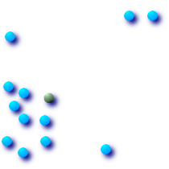

名前
ST_Centroid — ジオメトリの幾何学的重心を返します．
概要
geometry ST_Centroid(geometry
g1);
説明
ジオメトリの幾何学的重心のPOINTを返します．ジオメトリの質量の中心と同等です．
[MULTI]POINTに対しては，入力座標の算術平均として計算されます．
[MULTI]LINESTRINGに対しては，各区分の重み付き長さとして計算されます．
[MULTI]POLYGONに対しては，「重み」を面積ととらえて計算します．
空ジオメトリが与えられた場合は，空のGEOMETRYCOLLECTIONが返されます．
NULLが与えられた場合は，NULLが返されます．
重心は，最も高い次元のジオメトリの要素の集合の重心と同じです(低い次元のジオメトリは「重み」0に貢献するため)．
![[注意]](images/note.png) | |
GEOSモジュールを使用することで計算は高精度になります(コンパイル時に有効にします)． |
 このメソッドは OpenGIS Simple Features Implementation Specification for SQL 1.1.を実装するものです．
このメソッドは OpenGIS Simple Features Implementation Specification for SQL 1.1.を実装するものです．
このメソッドはSQL/MM仕様の実装です． SQL-MM 3: 8.1.4, 9.5.5
例
次に示す図では，青点が入力ジオメトリの重心です．

|
|
|
|
SELECT ST_AsText(ST_Centroid('MULTIPOINT ( -1 0, -1 2, -1 3, -1 4, -1 7, 0 1, 0 3, 1 1, 2 0, 6 0, 7 8, 9 8, 10 6 )'));
st_astext
------------------------------------------
POINT(2.30769230769231 3.30769230769231)
(1 row)